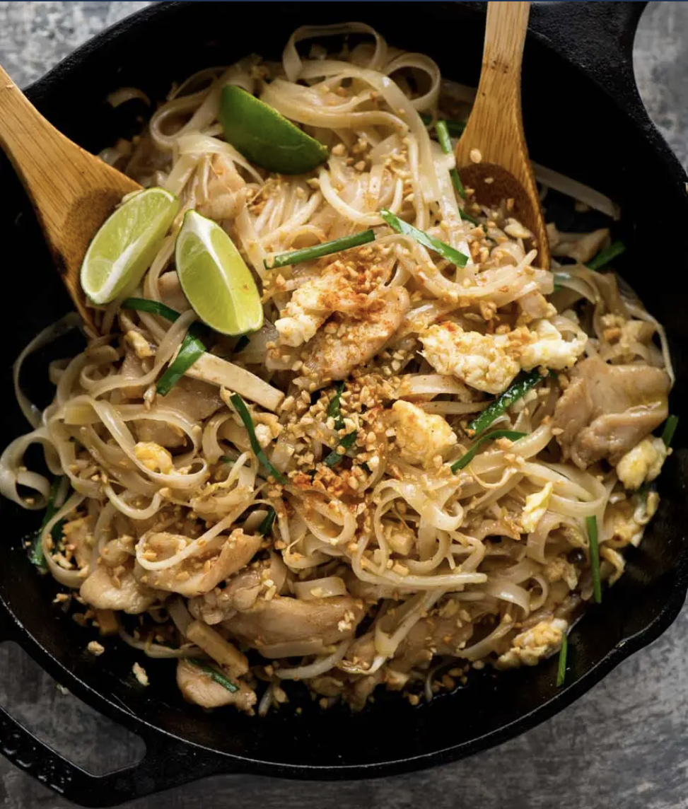

Pad thai

Ingrediënten
- 1 tablespoon medium-size dried shrimp, rinsed and patted dry
- 3 tablespoons Naam Makham (Tamarind water)
- 2 tablespoons plus 3/4 teaspoon Naam Cheuam Naam Taan Piip (Palm sugar simple syrup)
- 1 1/2 tablespoons Thai fish sauce
- 4 ounces (about 2 cups, tightly packed) semi-dried thin, flat rice noodles (sometimes labeled “phat thai”), see note
- 2 tablespoons rendered pork fat or vegetable oil
- 1 large egg, at room temperature
- 1 1/4 ounces unflavored pressed tofu (firmer than “extra firm”), cut into small pieces (about 1 inch long, 1/2 inch wide, and 1/4 inch thick), about 1/4 cup
- 1 tablespoon shredded salted radish, soaked in water 10 minutes then drained
- 2 ounces bean sprouts (about 1 cup, lightly packed)
- 2 ounces medium shrimp, (about 4), shelled and deveined
- 1/4 cup very coarsely chopped (about 1-inch lengths) garlic chives, plus a pinch or two for finishing
- 2 generous tablespoons coarsely chopped unsalted roasted peanuts
- 2 small lime wedges (preferably from a Key lime)
- Fish sauce
- Granulated sugar
- Phrik Naam Som (Vinegar-soaked chiles)
- Phrik Phon Khua (Toasted-chile powder)
Bereiding
- Toast the shrimp and make the sauce: Heat a small dry pan or wok over medium heat, add the dried shrimp, and cook, stirring frequently, until they’re dry all the way through and slightly crispy, about 5 minutes. Set them aside in a small bowl. Covered at room temperature, they’ll keep for up to 1 week.
- Combine the tamarind water, simple syrup, and fish sauce in a small bowl and stir well. Measure 1/4 cup plus 2 tablespoons, discarding the rest.
- Soak the noodles and stir-fry the dish: Soak the noodles in lukewarm water until they’re very pliable but not fully soft, about 20 minutes. Drain them well and snip them into approximately 8-inch lengths just before stir-frying.
- Heat a large, heavy skillet over medium-high heat (or a wok over very high heat), add the pork fat, and swirl it to coat the sides. When it begins to smoke lightly, crack the egg into the center of the pan (it should spit and sizzle violently and the whites should bubble and puff). Add the tofu, radish, and dried shrimp beside the egg. If you’re using a skillet, decrease the heat to medium; if you’re using a wok, keep the heat very high.
- Cook, stirring everything but the egg, until the edges of the egg are light golden brown, about 1 minute, then flip the egg (it’s fine if the yolk breaks), break the egg into several pieces with the spatula, and stir everything together well.
- Add the noodles and bean sprouts, and stir-fry (constantly stirring, scooping, and flipping) until the noodles and bean sprouts have softened slightly, about 1 minute.
- Add the shrimp, then stir the tamarind mixture once more and add it to the pan. Stir-fry, making sure the shrimp get plenty of time on the hot surface, until they are cooked through, just about all the liquid has evaporated, and the noodles are fully tender and no longer look gloppy or clumpy, 2 to 4 minutes.
- Add the chives and 1 tablespoon of the peanuts. Stir-fry briefly, then transfer it all to a plate, sprinkle on the remaining peanuts and chives, and serve with the lime wedges. Season to taste with the fish sauce, sugar, vinegar-soaked chiles, and chile powder.
- Note: Semi-dried noodles (fairly pliable rather than brittle, like fully dried) are widely available in the refrigerated sections of Asian markets. If you can’t find semi-dried noodles, you can substitute 2 1/4 ounces of fully dried “phat thai” noodles soaked in lukewarm water for about 10 extra minutes (to approximate the texture of semi-dried noodles).